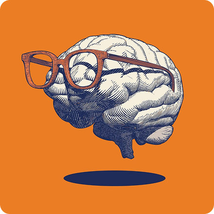

What is AI?
Artificial intelligence (AI) is a technology that enables computers and machines to perform tasks that normally require human intelligence, such as learning, problem-solving, decision-making, and understanding language.
AI-powered systems can recognize objects, process information, communicate with people, and provide recommendations. Some can also perform tasks independently, reducing the need for direct human involvement.
Today, much of the focus is on generative AI, which can create new content such as text, images, and videos. Generative AI is built on technologies such as machine learning (ML) and deep learning.

Machine Learning
Machine learning (ML) is a branch of artificial intelligence that allows computers to learn from data and make predictions or decisions without being specifically programmed for every task.
There are different machine learning methods, including linear regression, logistic regression, decision trees, random forests, support vector machines, K-nearest neighbors, and clustering. Each method is designed for different types of problems and data.
One widely used ML method is the neural network, which is inspired by the structure of the human brain. It uses interconnected layers to process information and identify complex patterns in large amounts of data.
A basic type of ML is supervised learning, where algorithms are trained using labeled data. The system learns the relationship between inputs and their expected outputs so it can make predictions when given new data.
Deep Learning
Deep learning is a specialized branch of machine learning that uses multiple layers of neural networks to perform complex tasks and make decisions in ways inspired by the human brain.
Deep neural networks contain an input layer, several hidden layers, and an output layer. Compared with traditional neural networks, deep learning models typically use many more hidden layers to process information.
These layers allow deep learning systems to learn important features from large amounts of unlabeled and unstructured data with little human assistance. The models can then identify patterns and make predictions based on what they have learned.
Deep learning is commonly used in areas such as natural language processing, computer vision, and other applications that require recognizing complex patterns in large datasets. It is also a major technology behind many modern AI systems.